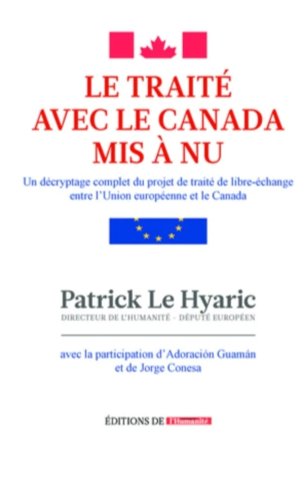

Publication d’archives
Ah, ces démocrates !
Date indiquée par Facebook · 2 avril 2024
Texte conservé avec la publication
Ah, ces démocrates !
La tête de liste du parti présidentiel est une vraie adepte de l’ancien président de la Commission européenne M. JC Junker.
En 2015, celui-ci avait déclaré pour justifier la décision des gouvernements français et les dirigeants des institutions européennes de passer outre le non français et Néerlandais au traité constitutionnel européen : « Il ne peut y avoir de choix démocratique contre les traités européens ». Traduit dans le langage courant ceci veut dire que les dirigeants européens au service des puissances d’argent imposent aux peuples ce qu’ils ont décidé, même si lesdits peuples expriment leur refus.
Mme Valérie Hayer, chef de file de la liste Renaissance pour les élections européennes, présidente par ailleurs de ce groupe au Parlement européen n’a pas hésité à prévenir qu’en cas de vote contre du traité de libre-échange entre l'Union européenne et le Canada par l'Assemblée nationale après le rejet du sénat, celui-ci continuerait à être appliqué. Évidemment, Mme Hayer fait partie du club très fermé dans lequel on se gargarise du mot démocratie en la foulant au pied.
Le double langage, y est une manière d’être applaudie à tout rompre par le grand capital international qui a besoin de ce traité pour assouvir leur demande de libre circulation des capitaux et des marchandises. Double langage pour cacher les vérités, pour brouiller les pistes. D’un côté, on brandit la planification écologique, de l’autre, on laisse importer des produits agricoles et industriels en dehors de nos normes sanitaires. D’un côté, on nous abreuve du mot souveraineté de l’autre, on veut faire appliquer un traité dans lequel les multinationales peuvent attaquer devant des tribunaux privés les législations des Etats qui les empêcheraient d’augmenter leur taux de profit. (Voir aussi mon livre : le traité avec le Canada mis à nu Éditions de l’Humanité)
Madame Hayer s’était déjà distinguée il y a quelque temps en déclarant qu’elle voulait « avoir l’avis du Medef avant de se prononcer sur l’immigration ». Clair non ?
Une vraie bonne élève de M. Junker, vous dis-je ! Avant le vote sur le traité constitutionnel l’ancien président de la Commission européenne avait sans rire prévenu : « Si c’est oui, nous dirons donc : on poursuit ; si c’est non nous dirons on continue ». M. Junker comme Mme Hayer ne sont pas des humoristes, mais de sérieux mandataires du grand capital. Aux peuples non seulement de leur dire non, mais de s’unir pour défricher les chemins d’un post-capitalisme.
Patrick Le Hyaric

Sources
Archive rouge · export Facebook · AR-0002-FB-01432